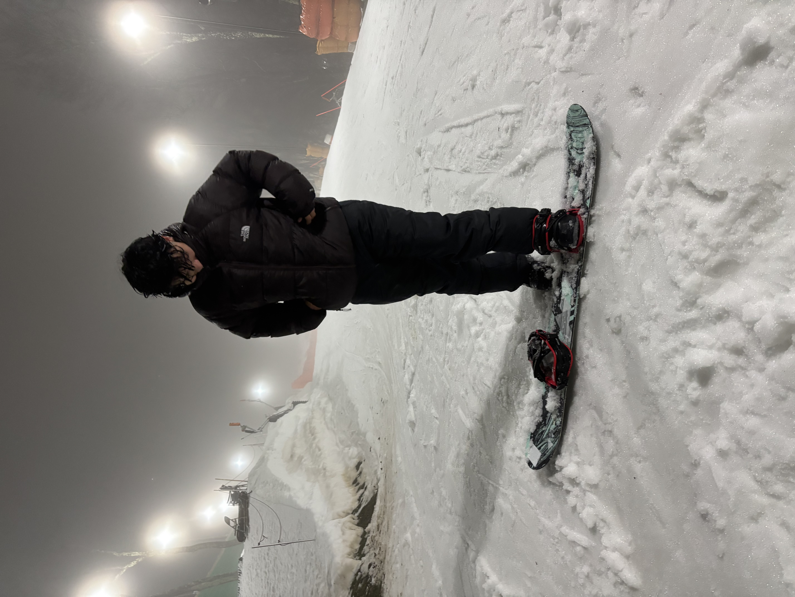

Andres Montoya 🫡 Amazing Moose 🫡 ITIS 3135
Home
||
Introduction
||
Contract
||
Amazing Mooski Resort
Introduction
Andres Montoya 🫡 Amazing Moose

Me snowboarding
Personal Background:
My name is Andres, I'm from Gastonia, NC. I chose to attend UNC Charlotte to pursue a degree in Computer Science concentrating in Information Technology
Professional Background:
Worker at fast food restaurant
Academic Background:
Second year at UNCC majoring in Computer Science with a concentration in Information Technology
Programming / Software Background:
Have experience with Java and Python
Primary Computer Platform:
MacOS
Courses:
ITSC 2175 - Logic and Algorithms:
Required for major
ITSC 2600 - Computer Science Program, Identity, Career:
Required for major and also great for professional development in Computer Science
ITSC 3135 - Web-Based Application Design and Development:
Required for my concentration
ITIS 3200 - Intro to Info Security and Priv:
Required for my concentration
CJUS 1511 - Foundations of Criminal Justice:
Needed a 1511 to finish general education
Funny / Interesting Item about yourself:
I like to play video games, go to the gym, and snowboarding when I can
I'd Also Like to Share:
I'm just a chill guy